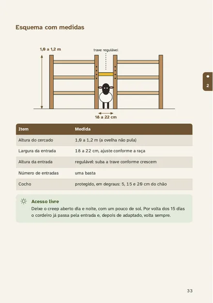
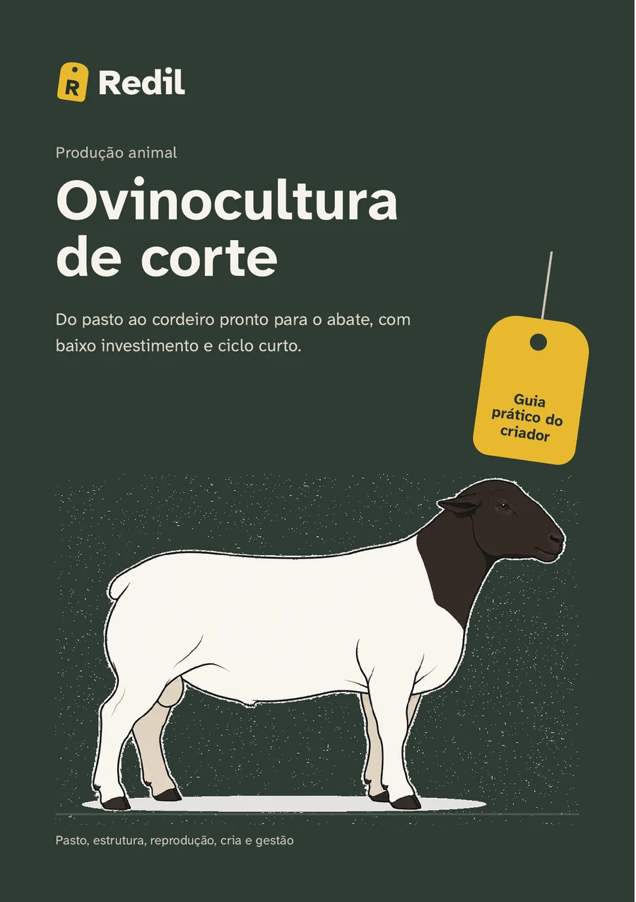
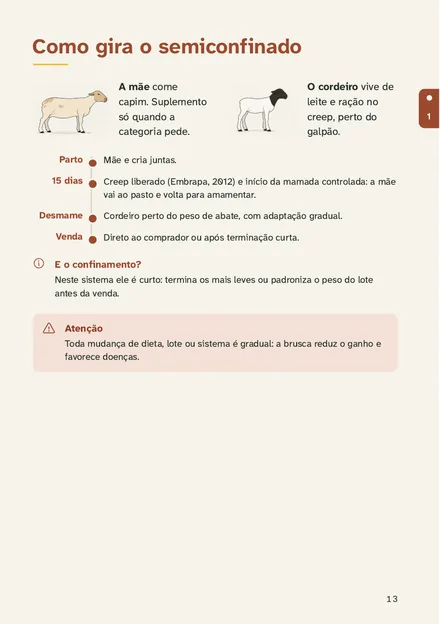
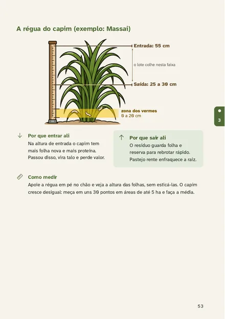
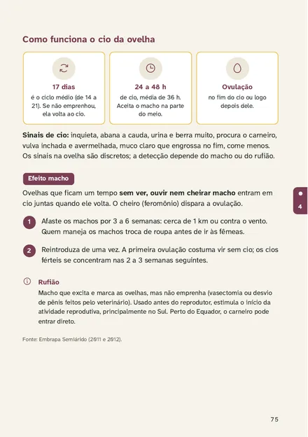
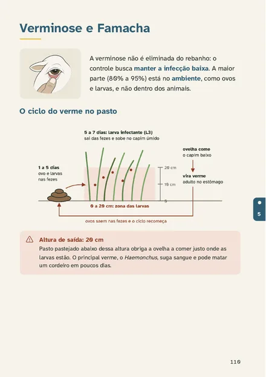
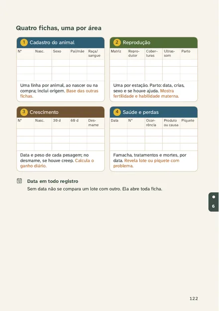

Guia prático do criador
Ovinocultura de corte, do pasto ao cordeiro pronto
Para quem está começando a criar ovinos ou quer organizar o rebanho: estrutura, pasto, reprodução, cria, sanidade e gestão, em 138 páginas com 27 esquemas com medidas.
Garantia de 7 dias. Entrega por e-mail em PDF e EPUB.


Folheie antes de comprar
Cada tópico cabe em poucas páginas, com esquema, tabela ou passo a passo para consultar no dia a dia da propriedade. Toque numa página para ver em tamanho grande.











Para quem é este guia
É para você se
- Vai começar a criar ovinos de corte e quer saber o que construir, que raça usar e como organizar o primeiro lote
- Já cria, mas sem fichas, sem estação de monta ou sem saber quanto o rebanho rende
- Quer medidas prontas de creep, cocho, baia e cerca elétrica para mostrar a quem vai construir
- Prefere material curto e visual, para consultar no celular ou impresso no curral
Não é para você se
- Procura doses de vermífugo, vacina ou antibiótico: o guia não traz doses, isso é com o médico-veterinário
- Espera receita de lucro garantido: o guia mostra como fazer as contas, os números são seus
- Cria ovinos de leite ou de lã: o foco é corte, com venda de cordeiros
- Quer aulas em vídeo: este produto é um livro digital
O que tem dentro
O guia segue o ciclo de produção: primeiro o negócio e a estrutura, depois a comida, a reprodução, a cria até a venda e, por fim, a sanidade e as contas.
Parte 1
O negócio
- Por que ovinos de corte8
- Objetivo e sistema de criação12
- Raças e grau de sangue14
- Nomenclatura dos animais18
Parte 2
Estrutura
- Instalações: princípios22
- Galpão, baias e maternidade24
- Cochos, bebedouros e saleiros28
- Creep feeding32
- Tronco, apartador e balança35
- Cercas38
- Equipamentos e identificação41
Parte 3
Comida
- Formação da pastagem44
- Matéria seca e lotação47
- Pastejo rotacionado52
- Pastejo ultradenso55
- Medição da área57
- Dieta por categoria59
- Escore de condição corporal64
Parte 4
Reprodução
- Escolha do reprodutor67
- Escolha da matriz71
- Estação de monta74
- Marcação e diagnóstico de gestação79
- Manejo da gestante82
- Borregas e primeira cobertura85
Parte 5
Do parto ao abate
- Parto e pós-parto89
- Cria: primeiras semanas94
- Mamada controlada e creep98
- Cria: até o desmame101
- Procedimentos no cordeiro104
- Confinamento de cordeiros106
- Verminose e Famacha110
Parte 6
Sanidade e gestão
- Higiene e prevenção115
- Doenças, vacinas e cascos117
- Gestão do rebanho e planilhas121
- Mão de obra e rotina125
- Custos e indicadores127
- Vender bem130
- Diversificação da receita132
No fim, glossário com os termos do dia a dia da criação (página 134) e a lista de referências (página 136).
Como o guia foi escrito
Números com fonte pública
Lotação, consumo de matéria seca, idades e pesos trazem a fonte no rodapé do tópico: Embrapa, IBGE e universidades. Dado de mercado sempre vem com o ano.
Sem doses de medicamento
O guia explica prevenção, sinais de doença e o método Famacha, mas vacina, vermífugo e tratamento são indicados pelo médico-veterinário que conhece o seu rebanho e a sua região.
O que você recebe
- Guia em PDF, formato A5138 páginas, abre em qualquer celular ou computador
- Versão EPUBPara leitores de livro digital, inclusive o Kindle pelo Enviar para o Kindle
- 27 esquemas com medidasCreep, cochos, baias, cerca elétrica, tronco e galpão
- Pronto para imprimirImprima os tópicos que vai usar no curral
Pagamento único, à vista ou parcelado no cartão
Comprar o guiaGarantia de 7 dias. Se o guia não servir para você, peça o reembolso em até 7 dias depois da compra e receba o valor de volta.
Pix, cartão ou boleto. Compra processada pela Greenn.
Perguntas frequentes
Como recebo o guia?
Logo que o pagamento é aprovado, você recebe no e-mail da compra os links para baixar o PDF e o EPUB. No Pix e no cartão a aprovação costuma ser imediata; no boleto, leva até 3 dias úteis.
Nunca criei ovinos. O guia serve para mim?
Sim. O guia começa pelo negócio e pelos sistemas de criação, explica os termos técnicos e traz um glossário no fim. Use como ponto de partida e conte com um médico-veterinário e um zootecnista de confiança.
Serve para a minha região?
Os princípios de estrutura, pasto, reprodução e cria valem para todo o país. Capim, época da estação de monta e calendário sanitário mudam conforme o clima: o guia mostra o que considerar, e o técnico da sua região ajuda a fechar os detalhes.
O guia traz doses de remédio e de vacina?
Não. Ele explica prevenção, sinais de doença, o método Famacha e o período de carência, mas a indicação de produto e dose é sempre do médico-veterinário.
Posso ler no celular e imprimir?
Sim. O PDF tem formato A5 e abre em qualquer celular, tablet ou computador, e pode ser impresso. O EPUB ajusta o texto à tela do leitor de livro digital.
Como funciona a garantia?
Você tem 7 dias a partir da compra para pedir o reembolso, sem precisar justificar. O pedido é feito pela Greenn, que processou a compra, ou pelo nosso contato, e o valor volta pela mesma forma de pagamento.
Posso compartilhar o arquivo?
O guia é para uso pessoal de quem comprou. Pode imprimir para usar na sua propriedade, mas não pode revender, distribuir ou publicar o arquivo.
Como falo com vocês?
Pelo e-mail redil@setbox.com.br ou pelo Instagram @redilovinos.
Monte a criação com medida, ficha e conta feita
138 páginas, 27 esquemas, garantia de 7 dias.